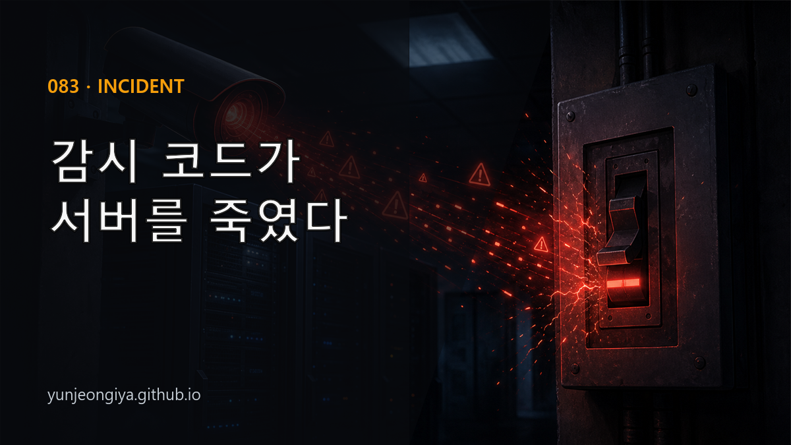
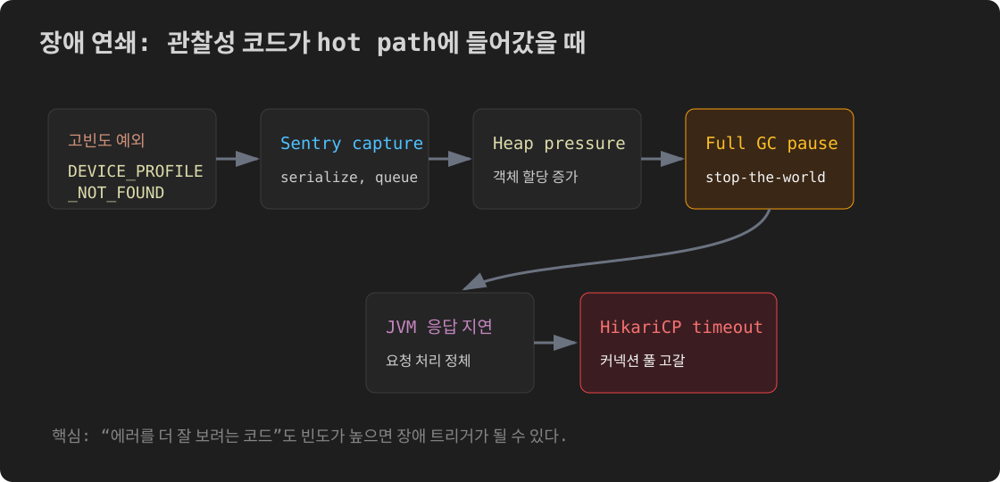
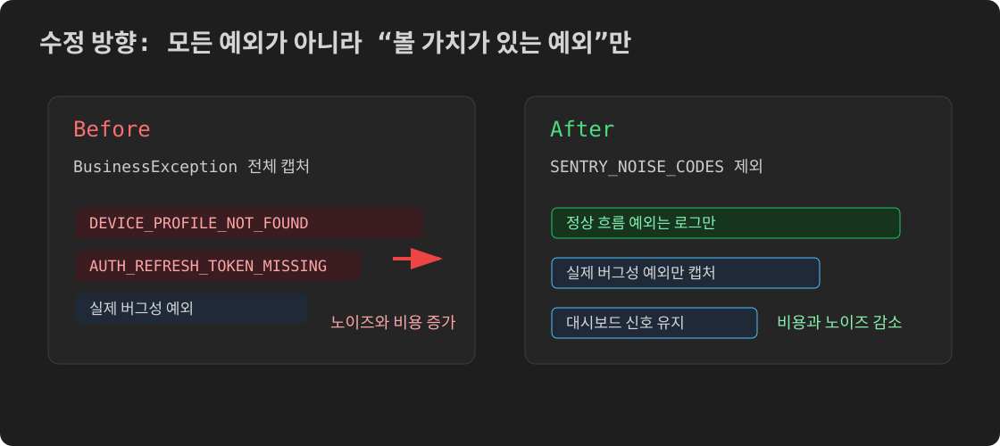

이 글은 블로그에도 공개할 예정입니다.

모니터링을 붙이다가 서버가 죽었다. 정확히는, 에러를 더 잘 잡으려고 추가한 코드가 GC를 폭발시키고, JVM을 멈추게 하고, DB 커넥션 풀을 고갈시켰다.
이 글은 그 cascade의 실제 흐름과, 세 번 틀린 가설 끝에 찾은 진짜 원인에 관한 기록이다.
서비스에서 발생하는 BusinessException(도메인 예외)을 Sentry로 추적하기로 했다. 기존에는 로그에만 남기고 있었는데, 특정 에러 코드가 얼마나 자주 발생하는지 대시보드에서 바로 보고 싶었다.
변경은 간단했다. GlobalExceptionHandler의 handleBusinessException 메서드에 Sentry 캡처를 추가:
@ExceptionHandler(BusinessException.class)
public ResponseEntity<ErrorResponse> handleBusinessException(
BusinessException ex, HttpServletRequest request) {
log.warn("BusinessException: code={}, message={}", ex.getCode(), ex.getMessage());
// 추가: Sentry에도 기록
Sentry.withScope(scope -> {
scope.setFingerprint(List.of("business-exception", ex.getCode()));
scope.setTag("error.code", ex.getCode());
Sentry.captureException(ex);
});
return ResponseEntity.status(ex.getStatus())
.body(ErrorResponse.of(ex));
}별로 복잡한 코드가 아니다. 배포 후 이틀 동안 아무 문제도 없었다.
밤 10시경 알림이 왔다. HikariCP 커넥션 풀 대기 큐가 급격히 쌓이고 있다는 Grafana 알림이었다. 서비스 응답이 느려지다가 곧 커넥션 타임아웃 에러가 발생하기 시작했다.
풀 고갈 cascade의 전형적인 패턴:

첫 번째 의심은 DB였다. MySQL processlist를 확인하고, EXPLAIN을 실행했다. 몇 가지 쿼리가 EXPLAIN 상 실행 계획이 좋지 않아 보였다.
인덱스를 분석하고, 쿼리를 최적화했다.
결과: 서비스 재시작 후 일시적으로 안정됐지만 다시 같은 증상이 나타났다. EXPLAIN 결과가 나빠 보인 건 cascade victim 상태의 쿼리들이었다. 느린 쿼리가 원인이 아니라 결과였다.
두 번째 의심은 EC2 서버 자체였다. t3.medium의 vCPU 2개가 포화 상태라면 JVM이 GC를 제대로 실행하지 못하고 스레드가 정체될 수 있다.
CloudWatch를 확인했다. EC2 CPU가 실제로 65~98%까지 올라가 있었다.
인프라 한계라면 해결책은 스케일업이다. 하지만 평소보다 트래픽이 많지 않았다. "왜 오늘만 이런가?"에 답이 없었다.
결론 유보: 원인이 아니라 결과일 수 있다. 다음 단서를 찾아야 한다.
"어제 배포한 게 문제 아닐까?" — 이 질문을 처음부터 했어야 했다.
직전 24시간 prod 배포 커밋을 확인했다. GlobalExceptionHandler에 Sentry 캡처를 추가한 커밋이 있었다.
그제야 연결됐다.
특정 디바이스 화면이 무한 폴링 방식으로 동작하고 있었다. 해당 디바이스가 서버에 등록되지 않은 상태면 매번 DEVICE_PROFILE_NOT_FOUND 에러를 발생시켰다.
5시간 동안 이 에러 코드가 580회 이상 발생했다. 전체 BusinessException의 99%였다.
기존에는 이 예외가 log.warn 한 줄로 처리됐다. 새 코드에서는 매 요청마다:
Sentry.withScope(scope -> {
// Scope 객체 생성
// Hint 객체 생성
// Exception 직렬화 (스택트레이스 포함)
// 이벤트 큐 enqueue
Sentry.captureException(ex);
});Sentry SDK는 각 예외를 직렬화하고 내부 큐에 쌓는다. 큐는 백그라운드 스레드가 비운다. 580회/5시간은 초당 0.03회로 낮아 보이지만, 각 캡처마다 힙에 적지 않은 객체가 생성된다. 이 시점의 지표와 로그를 맞춰 보면, 가장 그럴듯한 연결고리는 Sentry 캡처로 늘어난 힙 할당과 그에 따른 GC 압력이었다.
관측된 흐름:
Sentry에 다음과 같은 이슈가 보고된 사례가 있다:
정상 흐름의 고빈도 예외를 전부 Sentry로 보내는 건 비용 대비 이득이 작았다.
GlobalExceptionHandler에 노이즈 코드 제외 목록을 추가했다.
private static final Set<String> SENTRY_NOISE_CODES = Set.of(
"DEVICE_PROFILE_NOT_FOUND", // 디바이스 폴링 정상 흐름
"AUTH_REFRESH_TOKEN_MISSING" // 토큰 만료 정상 흐름
);
@ExceptionHandler(BusinessException.class)
public ResponseEntity<ErrorResponse> handleBusinessException(
BusinessException ex, HttpServletRequest request) {
log.warn("BusinessException: code={}, message={}", ex.getCode(), ex.getMessage());
if (!SENTRY_NOISE_CODES.contains(ex.getCode())) {
Sentry.withScope(scope -> {
scope.setFingerprint(List.of("business-exception", ex.getCode()));
scope.setTag("error.code", ex.getCode());
Sentry.captureException(ex);
});
}
return ResponseEntity.status(ex.getStatus())
.body(ErrorResponse.of(ex));
}원래 intent(에러 추적 강화)는 유지하면서, 정상 흐름인 고빈도 에러 코드는 Sentry 캡처에서 제외했다.

방어 심층 조치도 함께 적용했다:
-Xlog:gc*:file=/app/data/gc.log) — 다음 incident에서 즉시 진단 가능하도록handleBusinessException은 모든 도메인 예외를 처리하는 hot path다. 여기에 코드를 추가할 때는 해당 에러 코드가 prod에서 얼마나 자주 발생하는지를 먼저 확인해야 한다.
# prod 로그에서 특정 에러 코드 빈도 확인
docker logs <container> --since 1h 2>&1 | grep -c 'DEVICE_PROFILE_NOT_FOUND'1회/h 미만이면 안전하다. 100회/h 이상이면 힙/CPU 임팩트를 따져봐야 한다.
Sentry의 힘은 실제 버그를 잡는 데 있다. 정상 흐름에서 발생하는 예외(리소스 없음, 인증 만료, 입력 검증 실패)까지 전부 보내면 노이즈가 되고, 심한 경우 성능 문제를 일으킨다.
에러 추적을 추가할 때의 체크리스트:
장애 대응 첫 단계에서 직전 24시간 prod 배포 커밋을 확인하는 것을 루틴으로 만들었다. DB 쿼리나 인프라를 먼저 보는 것은 직관적이지만, 가장 가능성 높은 원인은 가장 최근에 바뀐 것이다.
git log --since='24 hours ago' --pretty=format:'%h %ci %s' origin/main | head -10